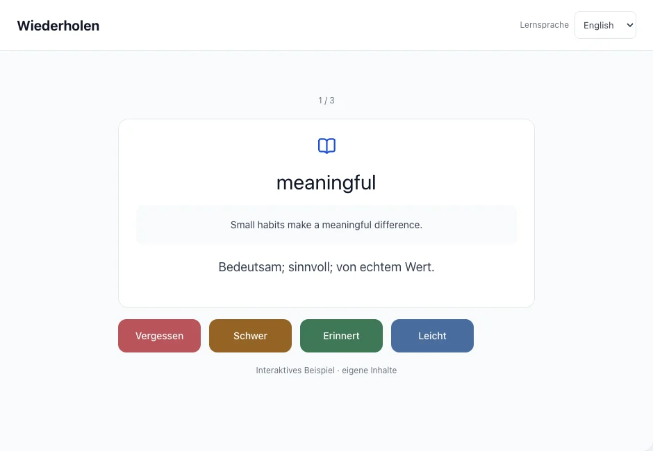
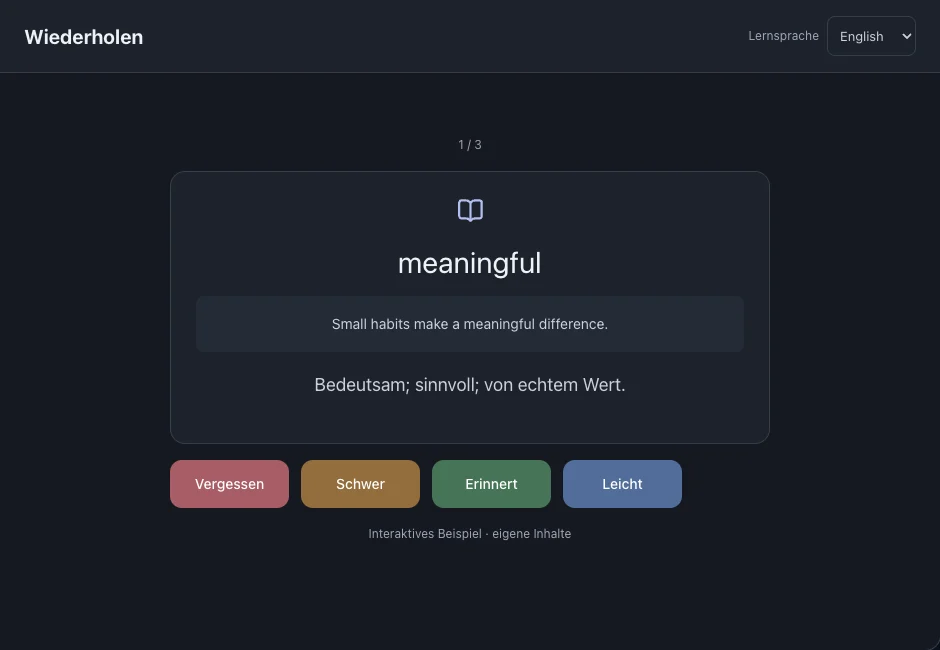

Wiederholen
Erinnere dich an Wörter oder Wendungen im Originalsatz und bewerte deine Erinnerung. Daraus entsteht der nächste Wiederholungstermin.
Auf dieser Seite
Eine Wiederholung durchführen
- Öffne „Wiederholen“ und versuche, dich vor dem Aufdecken an die Bedeutung zu erinnern.
- Zeige die Antwort und vergleiche sie mit deiner Erinnerung.
- Wähle eine Bewertung und gehe zur nächsten Karte. Die Bewertung wird gespeichert.



Die passende Bewertung wählen
Vergessen: nicht erinnert. Schwer: nur mit Mühe erinnert. Erinnert: richtig erinnert. Leicht: schnell und sicher erinnert.
Der nächste Termin hängt von Kartenverlauf und Bewertung ab. Er ist weder ein festes Intervall noch eine Push-Benachrichtigung.
Bekannte häufige Wörter prüfen
Bei aktivierter Häufigkeitsgrundlage können bekannte Wörter zur Prüfung erscheinen. Derzeit werden Englisch und Chinesisch unterstützt.
Siehe auchHäufige Wörter als Grundlage